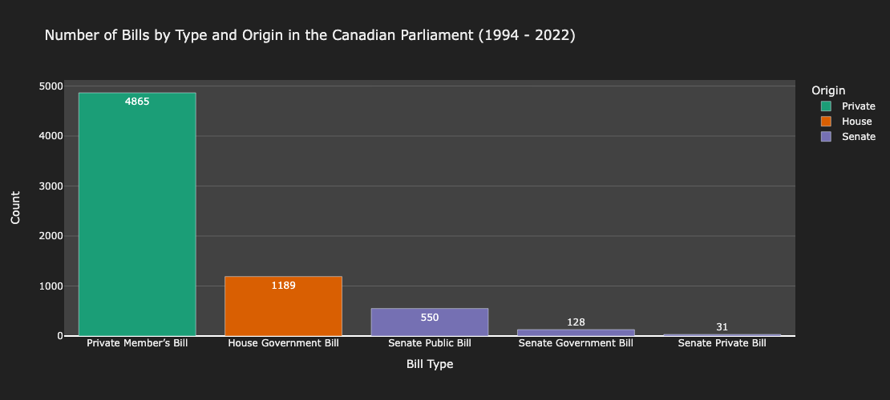
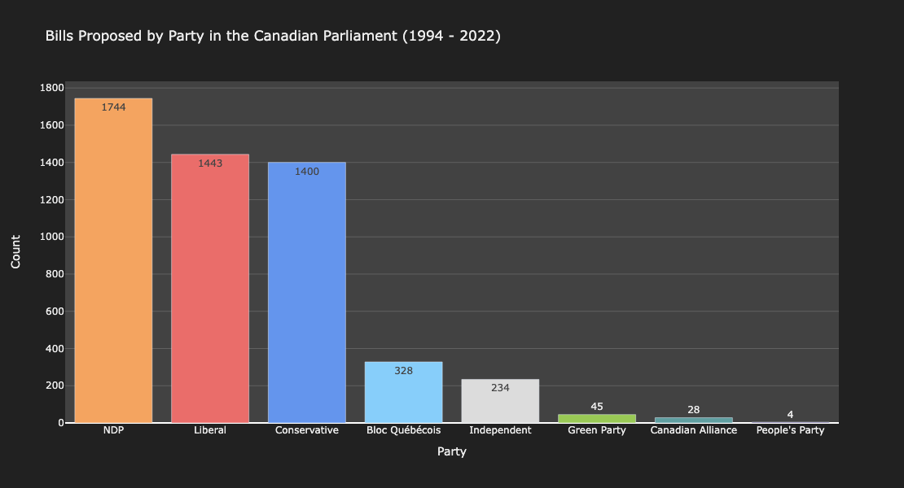
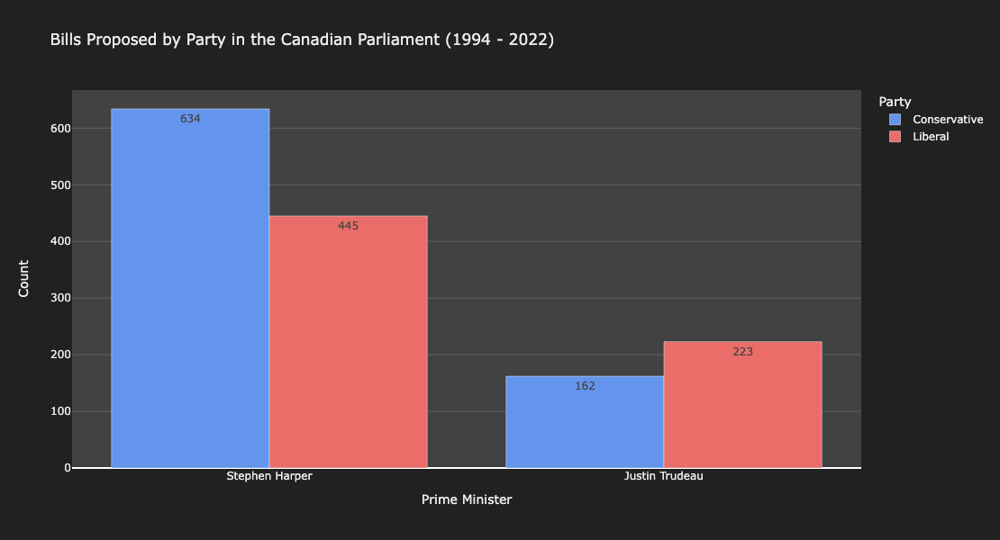
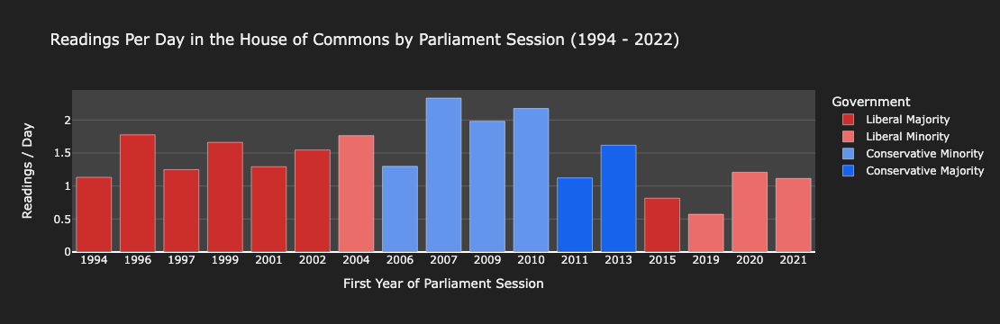
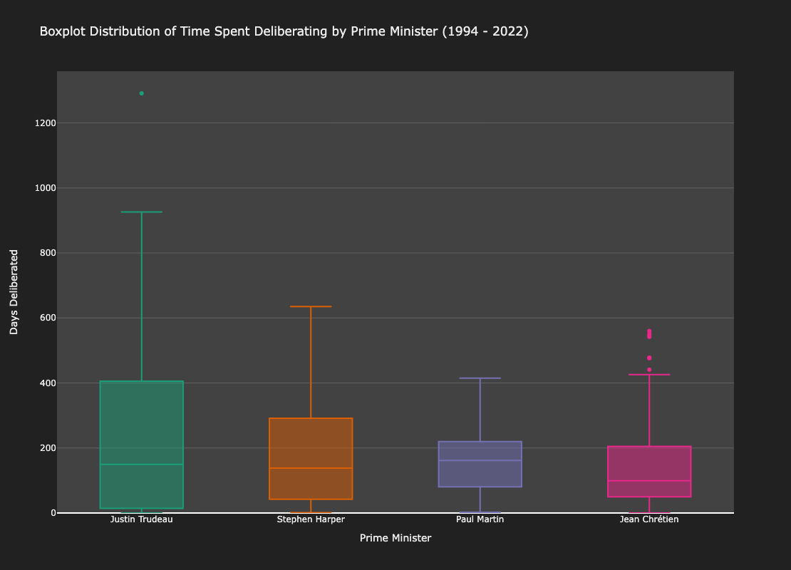
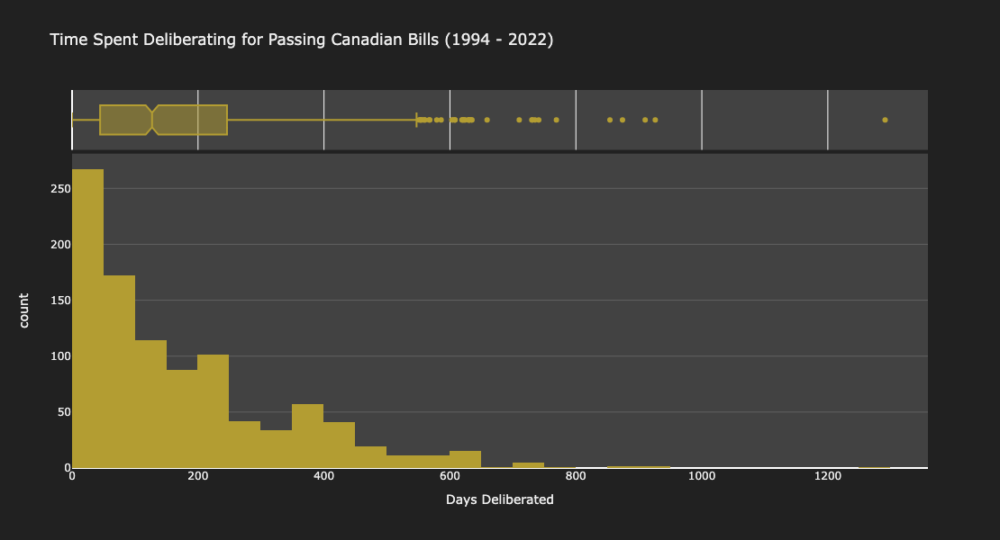
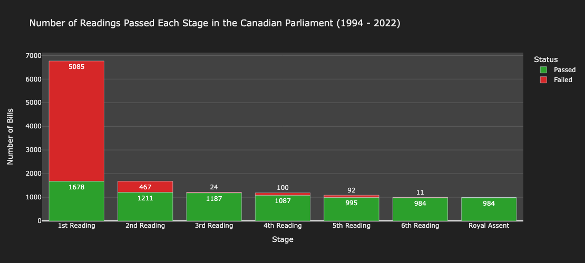
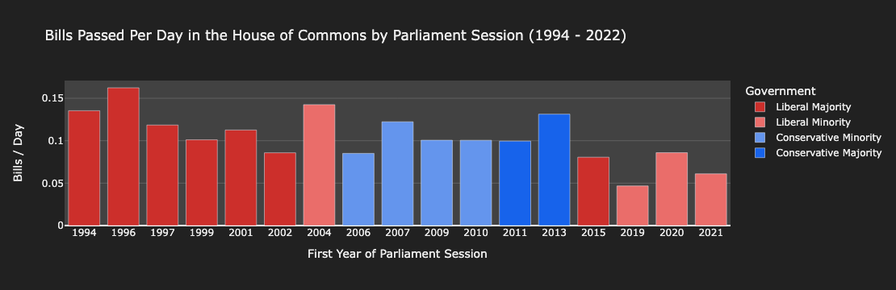

In January 2023, I did my first data analysis project on the legislative process here in Canada. I used the LEGISinfo database as my primary source of information, which contains a record of all the bills created, read, and passed since 1994. After I downloaded literally all the data from LEGISinfo1, I built a web scraper with BeautifulSoup4 to get more information about current and former members of parliament (MPs). This data included their party affiliations, their roles in the government or opposition, and the years they were active. Then, I used pandas to analyze the data and plotly to create some visualizations2. In this post, I’ll present \(8\) simple charts that contain the results of this analysis. I hope you find it interesting!
Part 1: Making the Bills
In the Canadian Parliament, a bill is a proposed law that is introduced for debate before becoming an official act of parliament. Bills originate from one of Canada’s two legislative chambers, the House and the Senate. All bills are either public (pertaining to all people) or private (pertaining to a specific group of people). If a bill is proposed in the House, it must be public. Three groups of people can propose bills: senators, private members3, and the government. The government consists of MPs4 associated with the ruling party (typically cabinet ministers). MPs not associated with the ruling party are known as private members.

Canada has three main political parties: the Liberals, the Conservatives, and the NDP. We also have some smaller parties, such as the Bloc Quebecois (focused on Quebec), the Green Party (focused on environmental issues), and the People’s Party (focused on conspiracy theories). The Canadian Alliance was a now-defunct offshoot of the Conservative party that existed from 2000-2003. In Figure 2, the “Independent” category refers to MPs who are not affiliated with any party.

The last aspect of bill creation I investigated was whether the governing party proposed more bills than the official opposition. To answer this question, I compared the number of bills proposed by the Conservative and Liberal parties under Stephen Harper’s conservative government and Justin Trudeau’s liberal government. The results of this analysis are shown in Figure 3.

Part 2: Reading the Bills
A productive government should ensure that all proposed bills are read. Whether the government actually passes these bills is more nuanced, but at the very least I would hope the government is reading a couple of bills a day. So here’s another plot, which shows the average number of bill readings per day in the past \(17\) sessions of the House of Commons. This statistic (and the similar statistic in Figure 8) uses the total number of days that the parliament was in session, not the number of days in which MPs actually met and read bills. Therefore, parliament probably reads \(\approx 50\%\) more bills than Figure 4 suggests each time it sits.

In addition to the number of bills read each day, I would also hope that a productive government would either pass or fail the bills in a reasonable amount of time. This can be measured with deliberation time, or the length of time between a bill being proposed and its last reading. If a bill fails upon the first reading, its deliberation time will be short. However, the deliberation time remains a useful metric for the bills that make it past the first reading, since the majority of these bills are eventually passed (see Figure 7). Thus, the median deliberation time serves as a proxy for a government’s bill-passing speed.


Part 3: Passing the Bills
To become law, a bill must pass \(6\) readings (\(3\) in the House and \(3\) in the Senate) and then receive royal assent from the governor general of Canada. Royal assent is essentially a formality in Canada; even though the governor general has the power to strike down a bill, no governor general has ever exercised this power. Figure 7 shows the number of bills that pass each reading.

Finally, I investigated how many bills were passed per day in each session of parliament (recall that we were looking at the number of bills read in Figure 4). The results of this analysis are shown in Figure 8.

Conclusion
I did a lot of analysis by political party in this blog post. This should go without saying, but the number of bills read/passed/proposed by a political party should not be taken as a measure of how good (or bad) the party is.
With that out of the way, thanks for reading!
I hope you found this interesting. If you want to view my horrendous5 two-year-old source code, it’s available on my GitHub.
Footnotes
There really wasn’t that much, since bills don’t get written very often.↩︎
In hindsight, I don’t know why I didn’t use matplotlib for plotting. It’s so much faster than plotly. For some reason, it took like ten minutes to render these graphs. Oh well, you live and you learn.↩︎
Private members and private bills are two different things.↩︎
If you are unfamiliar with Canadian politics, MPs are elected officials who sit in the House of Commons. Their role is roughly equivalent to American congressmen.↩︎
I’m not kidding. This project is \(4\) really long Jupyter notebooks. I’m not even sure if they work anymore, since I didn’t create a virtual environment and I have no idea which versions of Python, pandas, plotly, and BeautifulSoup4 I used. I swear I know better now.↩︎